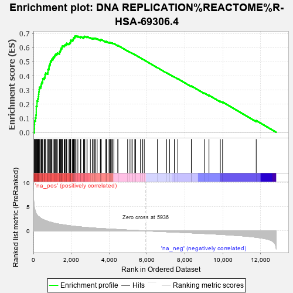
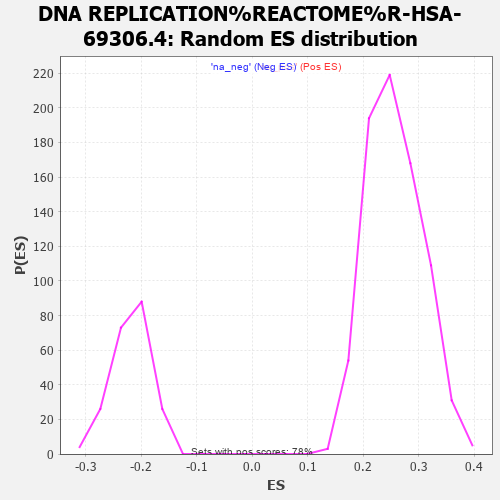

| | | Dataset | carrankstim |
| Phenotype | NoPhenotypeAvailable |
| Upregulated in class | na_pos |
| GeneSet | DNA REPLICATION%REACTOME%R-HSA-69306.4 |
| Enrichment Score (ES) | 0.6837561 |
| Normalized Enrichment Score (NES) | 2.6699665 |
| Nominal p-value | 0.0 |
| FDR q-value | 0.0 |
| FWER p-Value | 0.0 |
Table: GSEA Results Summary

Fig 1: Enrichment plot: DNA REPLICATION%REACTOME%R-HSA-69306.4
Profile of the Running ES Score & Positions of GeneSet Members on the Rank Ordered List
| PROBE | GENE SYMBOL | GENE_TITLE | RANK IN GENE LIST | RANK METRIC SCORE | RUNNING ES | CORE ENRICHMENT | | 1 | CDC6 | | | 52 | 4.836 | 0.0250 | Yes |
| 2 | MCM10 | | | 56 | 4.781 | 0.0535 | Yes |
| 3 | CDC45 | | | 62 | 4.689 | 0.0813 | Yes |
| 4 | GINS2 | | | 105 | 4.063 | 0.1025 | Yes |
| 5 | ORC6 | | | 137 | 3.687 | 0.1222 | Yes |
| 6 | GINS1 | | | 150 | 3.561 | 0.1427 | Yes |
| 7 | ORC1 | | | 151 | 3.560 | 0.1641 | Yes |
| 8 | POLE2 | | | 152 | 3.553 | 0.1855 | Yes |
| 9 | MCM2 | | | 191 | 3.310 | 0.2024 | Yes |
| 10 | FEN1 | | | 192 | 3.309 | 0.2223 | Yes |
| 11 | GINS4 | | | 232 | 3.098 | 0.2379 | Yes |
| 12 | CCNE2 | | | 260 | 2.996 | 0.2537 | Yes |
| 13 | CDT1 | | | 277 | 2.939 | 0.2702 | Yes |
| 14 | GINS3 | | | 287 | 2.919 | 0.2870 | Yes |
| 15 | MCM4 | | | 304 | 2.882 | 0.3031 | Yes |
| 16 | RFC3 | | | 316 | 2.844 | 0.3193 | Yes |
| 17 | PCNA | | | 393 | 2.604 | 0.3290 | Yes |
| 18 | UBE2C | | | 417 | 2.530 | 0.3424 | Yes |
| 19 | DNA2 | | | 441 | 2.483 | 0.3555 | Yes |
| 20 | CCNA2 | | | 491 | 2.380 | 0.3660 | Yes |
| 21 | E2F1 | | | 492 | 2.377 | 0.3803 | Yes |
| 22 | MCM5 | | | 577 | 2.232 | 0.3871 | Yes |
| 23 | MCM6 | | | 612 | 2.173 | 0.3975 | Yes |
| 24 | GMNN | | | 615 | 2.165 | 0.4104 | Yes |
| 25 | POLA2 | | | 651 | 2.119 | 0.4203 | Yes |
| 26 | CCNA1 | | | 760 | 1.963 | 0.4236 | Yes |
| 27 | POLD2 | | | 769 | 1.953 | 0.4348 | Yes |
| 28 | RFC2 | | | 770 | 1.951 | 0.4465 | Yes |
| 29 | CDK2 | | | 819 | 1.891 | 0.4541 | Yes |
| 30 | RFC4 | | | 827 | 1.880 | 0.4648 | Yes |
| 31 | PSMB5 | | | 835 | 1.867 | 0.4755 | Yes |
| 32 | PSMD14 | | | 874 | 1.827 | 0.4835 | Yes |
| 33 | RFC5 | | | 893 | 1.806 | 0.4930 | Yes |
| 34 | PSMC3 | | | 898 | 1.802 | 0.5035 | Yes |
| 35 | POLA1 | | | 950 | 1.748 | 0.5100 | Yes |
| 36 | POLD1 | | | 971 | 1.728 | 0.5188 | Yes |
| 37 | PRIM1 | | | 1033 | 1.654 | 0.5239 | Yes |
| 38 | PSMD1 | | | 1046 | 1.642 | 0.5329 | Yes |
| 39 | LIG1 | | | 1106 | 1.587 | 0.5378 | Yes |
| 40 | MCM8 | | | 1134 | 1.559 | 0.5450 | Yes |
| 41 | PSMB2 | | | 1159 | 1.535 | 0.5524 | Yes |
| 42 | PSMA3 | | | 1227 | 1.475 | 0.5560 | Yes |
| 43 | MCM3 | | | 1267 | 1.448 | 0.5616 | Yes |
| 44 | PSMD12 | | | 1370 | 1.378 | 0.5619 | Yes |
| 45 | PSME2 | | | 1373 | 1.377 | 0.5700 | Yes |
| 46 | POLE | | | 1410 | 1.352 | 0.5753 | Yes |
| 47 | PSMD11 | | | 1425 | 1.344 | 0.5823 | Yes |
| 48 | CCNE1 | | | 1455 | 1.326 | 0.5879 | Yes |
| 49 | MCM7 | | | 1456 | 1.326 | 0.5959 | Yes |
| 50 | PSMA6 | | | 1507 | 1.294 | 0.5998 | Yes |
| 51 | PSMA2 | | | 1514 | 1.290 | 0.6071 | Yes |
| 52 | PSME3 | | | 1533 | 1.278 | 0.6133 | Yes |
| 53 | PSMD3 | | | 1623 | 1.223 | 0.6137 | Yes |
| 54 | PRIM2 | | | 1652 | 1.203 | 0.6187 | Yes |
| 55 | E2F2 | | | 1697 | 1.182 | 0.6223 | Yes |
| 56 | PSMA7 | | | 1753 | 1.144 | 0.6249 | Yes |
| 57 | PSMC1 | | | 1759 | 1.138 | 0.6313 | Yes |
| 58 | PSMB6 | | | 1876 | 1.077 | 0.6287 | Yes |
| 59 | PSMB3 | | | 1910 | 1.058 | 0.6325 | Yes |
| 60 | PSMD7 | | | 1940 | 1.046 | 0.6365 | Yes |
| 61 | PSMC2 | | | 1961 | 1.036 | 0.6411 | Yes |
| 62 | RPA3 | | | 1964 | 1.035 | 0.6472 | Yes |
| 63 | PSMC4 | | | 1970 | 1.032 | 0.6530 | Yes |
| 64 | SKP2 | | | 2051 | 0.996 | 0.6527 | Yes |
| 65 | POLD3 | | | 2090 | 0.983 | 0.6556 | Yes |
| 66 | PSMA1 | | | 2100 | 0.979 | 0.6608 | Yes |
| 67 | PSMA5 | | | 2116 | 0.971 | 0.6654 | Yes |
| 68 | POLE3 | | | 2124 | 0.968 | 0.6707 | Yes |
| 69 | PSMD8 | | | 2174 | 0.951 | 0.6726 | Yes |
| 70 | DBF4 | | | 2181 | 0.946 | 0.6778 | Yes |
| 71 | PSMD2 | | | 2197 | 0.935 | 0.6822 | Yes |
| 72 | PSMA4 | | | 2248 | 0.908 | 0.6838 | Yes |
| 73 | PSMB7 | | | 2347 | 0.872 | 0.6813 | No |
| 74 | ANAPC10 | | | 2491 | 0.815 | 0.6749 | No |
| 75 | PSMB1 | | | 2504 | 0.806 | 0.6788 | No |
| 76 | CDC7 | | | 2648 | 0.758 | 0.6721 | No |
| 77 | PSMC5 | | | 2670 | 0.751 | 0.6750 | No |
| 78 | ANAPC11 | | | 2682 | 0.747 | 0.6786 | No |
| 79 | PSMD6 | | | 2714 | 0.735 | 0.6806 | No |
| 80 | SHFM1 | | | 2827 | 0.695 | 0.6759 | No |
| 81 | PSMC6 | | | 2835 | 0.693 | 0.6795 | No |
| 82 | UBE2D1 | | | 3008 | 0.642 | 0.6699 | No |
| 83 | POLE4 | | | 3125 | 0.602 | 0.6643 | No |
| 84 | PSMD4 | | | 3133 | 0.599 | 0.6674 | No |
| 85 | ANAPC1 | | | 3191 | 0.584 | 0.6664 | No |
| 86 | RBX1 | | | 3220 | 0.576 | 0.6677 | No |
| 87 | PSMB8 | | | 3267 | 0.560 | 0.6674 | No |
| 88 | PSMB4 | | | 3366 | 0.533 | 0.6629 | No |
| 89 | PSMB9 | | | 3532 | 0.493 | 0.6529 | No |
| 90 | ANAPC7 | | | 3550 | 0.487 | 0.6544 | No |
| 91 | PSMD5 | | | 3559 | 0.485 | 0.6567 | No |
| 92 | CUL1 | | | 3581 | 0.482 | 0.6580 | No |
| 93 | PSMD13 | | | 3792 | 0.435 | 0.6440 | No |
| 94 | PSMD9 | | | 3851 | 0.422 | 0.6420 | No |
| 95 | UBB | | | 3860 | 0.420 | 0.6439 | No |
| 96 | PSMB10 | | | 3992 | 0.388 | 0.6359 | No |
| 97 | RFC1 | | | 4033 | 0.379 | 0.6350 | No |
| 98 | RPA2 | | | 4062 | 0.374 | 0.6351 | No |
| 99 | CDC23 | | | 4092 | 0.369 | 0.6350 | No |
| 100 | PSME1 | | | 4144 | 0.358 | 0.6332 | No |
| 101 | UBC | | | 4173 | 0.348 | 0.6330 | No |
| 102 | UBE2E1 | | | 4246 | 0.333 | 0.6294 | No |
| 103 | ANAPC15 | | | 4456 | 0.289 | 0.6146 | No |
| 104 | ORC3 | | | 4461 | 0.288 | 0.6160 | No |
| 105 | ORC5 | | | 4973 | 0.175 | 0.5768 | No |
| 106 | PSMF1 | | | 5099 | 0.150 | 0.5679 | No |
| 107 | CDC26 | | | 5203 | 0.131 | 0.5606 | No |
| 108 | PSMD10 | | | 5215 | 0.128 | 0.5605 | No |
| 109 | SKP1 | | | 5352 | 0.100 | 0.5503 | No |
| 110 | ORC2 | | | 5394 | 0.094 | 0.5477 | No |
| 111 | PSME4 | | | 5651 | 0.048 | 0.5278 | No |
| 112 | RPA1 | | | 5767 | 0.027 | 0.5189 | No |
| 113 | CDC27 | | | 5851 | 0.015 | 0.5124 | No |
| 114 | RPS27A | | | 6546 | -0.106 | 0.4584 | No |
| 115 | ANAPC4 | | | 7035 | -0.192 | 0.4211 | No |
| 116 | CDC16 | | | 7187 | -0.217 | 0.4105 | No |
| 117 | ANAPC5 | | | 7439 | -0.262 | 0.3923 | No |
| 118 | UBA52 | | | 7624 | -0.292 | 0.3796 | No |
| 119 | PSMA8 | | | 8335 | -0.424 | 0.3262 | No |
| 120 | ANAPC16 | | | 8338 | -0.425 | 0.3286 | No |
| 121 | ORC4 | | | 9024 | -0.550 | 0.2779 | No |
| 122 | ANAPC2 | | | 9268 | -0.596 | 0.2623 | No |
| 123 | E2F3 | | | 9867 | -0.729 | 0.2196 | No |
| 124 | FZR1 | | | 9985 | -0.755 | 0.2149 | No |
| 125 | POLD4 | | | 11761 | -1.320 | 0.0830 | No |
Table: GSEA details [plain text format]

Fig 2: DNA REPLICATION%REACTOME%R-HSA-69306.4: Random ES distribution
Gene set null distribution of ES for DNA REPLICATION%REACTOME%R-HSA-69306.4